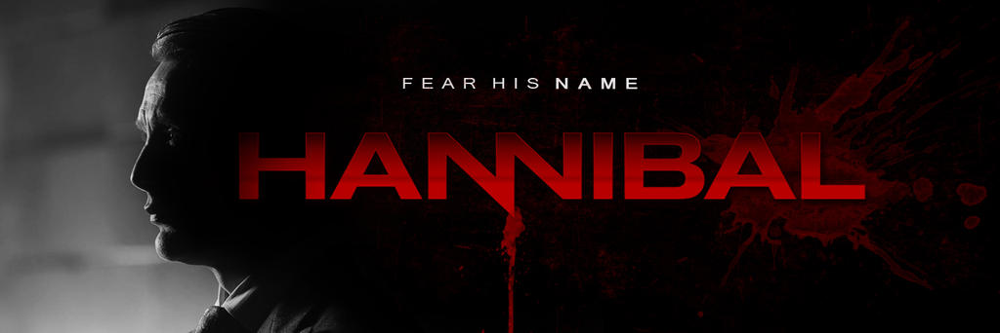

Hannibal Web
Página informativa sobre la serie Hannibal, con introducción a la trama y galería de personajes.
HTML5 · CSS3
Estudiante de Ingeniería Informática — aprendiendo a programar y construyendo mis primeros proyectos.
Soy estudiante de Ingeniería Informática en la Universidad Católica de Temuco, cursando actualmente primer año. Elegí esta carrera porque me interesa entender cómo funcionan los programas que uso todos los días. En este portafolio presento algunos de mis proyectos de HTML, CSS y JavaScript.

Página informativa sobre la serie Hannibal, con introducción a la trama y galería de personajes.
HTML5 · CSS3
Página informativa sobre gatos: datos generales, razas exóticas y galería de fotos. Trabajado en equipo.
HTML5 · CSS3